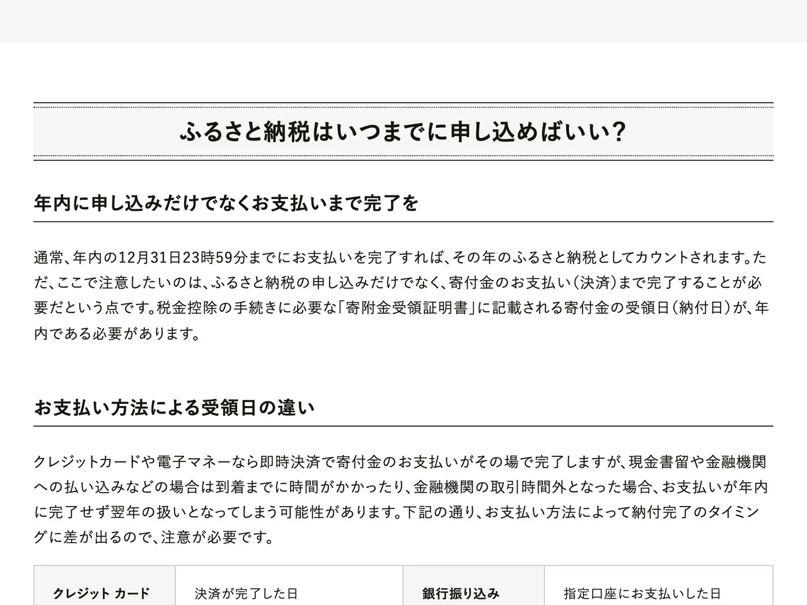
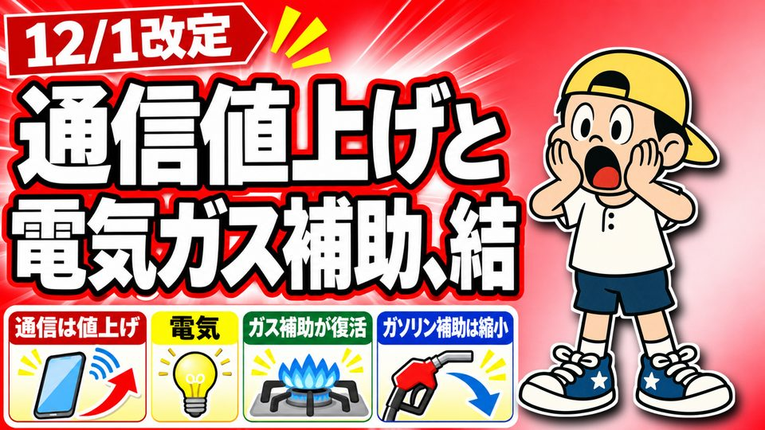
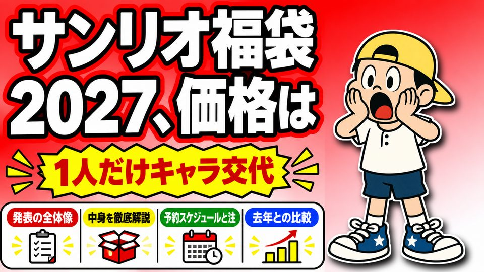
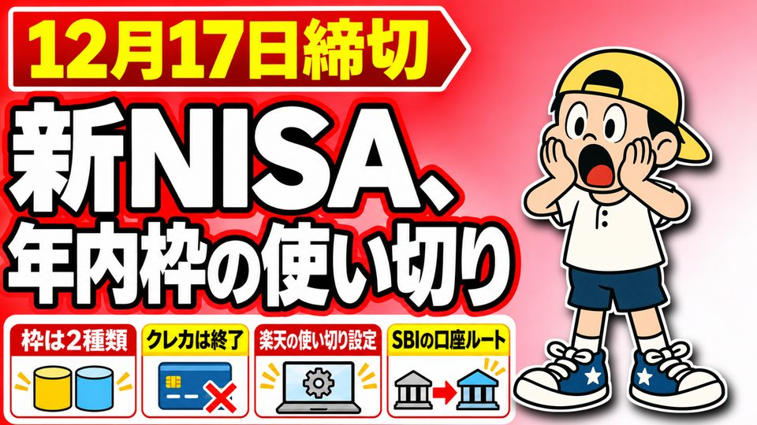

ぜんぶふるさと納税福袋・セールポイント・カード税・制度・NISAスマホ・通信
10本
 2026-11-22・ふるさと納税所得割額の2割ふるさと納税の上限額、計算方法を総務省の公式資料で確認
2026-11-22・ふるさと納税所得割額の2割ふるさと納税の上限額、計算方法を総務省の公式資料で確認 2026-11-21・スマホ・通信手数料は無料携帯電話の乗り換えMNP、やり方と手数料
2026-11-21・スマホ・通信手数料は無料携帯電話の乗り換えMNP、やり方と手数料
2026-11-21・ふるさと納税12月31日締切ふるさと納税、12月31日までにやること 2026-11-21・ポイント・カード締め日は会社次第クレジットカードの締め日・支払い日、3社で比較
2026-11-21・ポイント・カード締め日は会社次第クレジットカードの締め日・支払い日、3社で比較 2026-11-21・ポイント・カード速報12/7締切Amazonのd払い100%還元、上限5,000ptは抽選5,000名
2026-11-21・ポイント・カード速報12/7締切Amazonのd払い100%還元、上限5,000ptは抽選5,000名
2026-11-20・税・制度・NISA世帯で損得差電気ガス補助金はいつまで？12月の値上げと合わせ世帯別に試算
2026-11-20・福袋・セール1人だけ交代サンリオ福袋2027は全7キャラ4,990円で1人交代 2026-11-20・福袋・セール価格は据え置きゴディバ福袋2027は3種類、価格据え置きでも中身は変化
2026-11-20・福袋・セール価格は据え置きゴディバ福袋2027は3種類、価格据え置きでも中身は変化 2026-11-20・福袋・セール本番は8日間Amazonブラックフライデー2026、7つの企画の買い方
2026-11-20・福袋・セール本番は8日間Amazonブラックフライデー2026、7つの企画の買い方
2026-11-19・税・制度・NISA12月17日締切新NISAの年内枠を使い切る手順｜クレカ積立の締切後でも間に合う方法